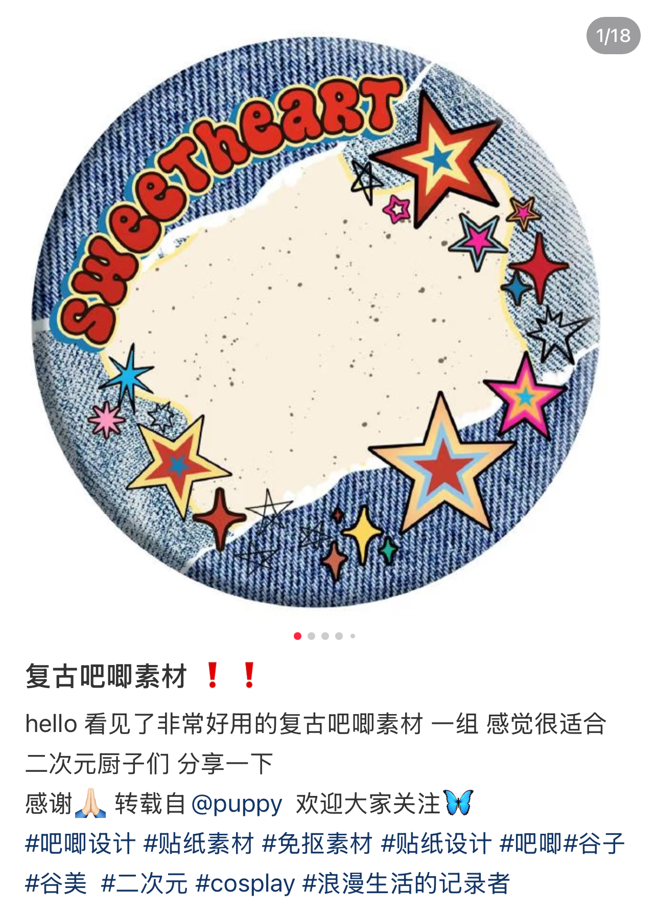
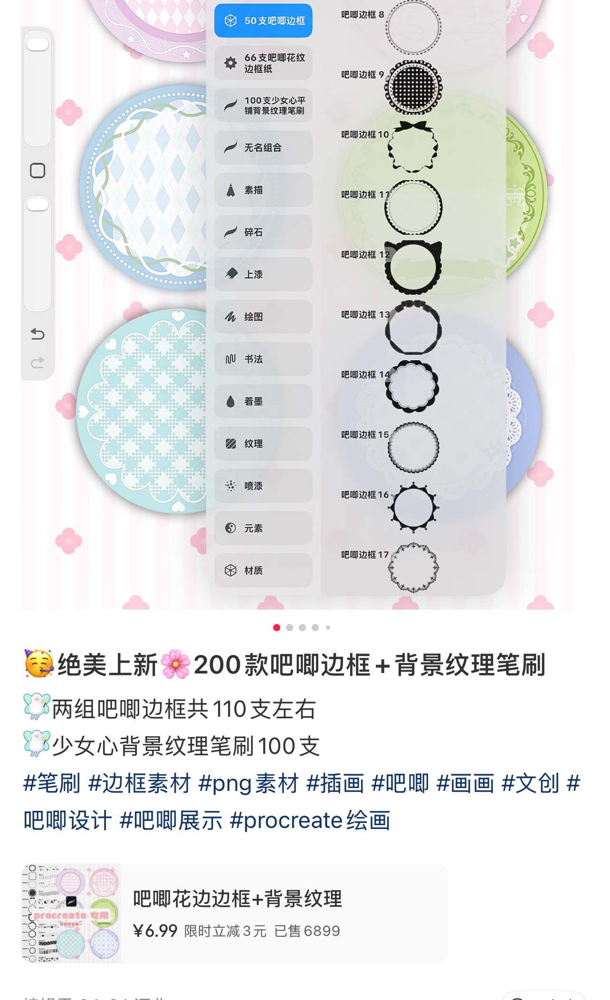
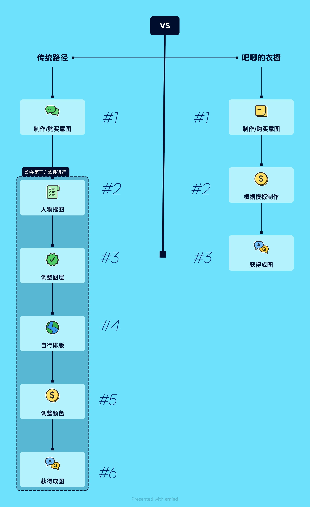
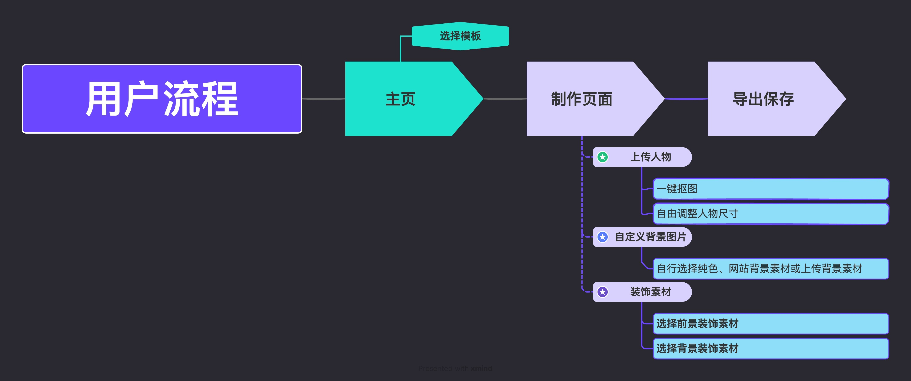

01
透明 PNG 素材包
创作者将几十至上百个装饰素材打包分享或出售，但使用者仍需要自行完成排版制作。这种形式更适合已经掌握专业设计软件的用户。
与从空白画布开始设计不同，“吧唧的衣橱”通过预设构图降低用户在排版、视觉层级和素材组合上的决策成本，让缺乏设计经验的用户也能够完成具有较稳定视觉效果的个性化创作。
随着兴趣社群活动的发展，围绕偶像、动漫角色等展开的粉丝自制周边逐渐成为粉丝参与文化的一种实体形式。
粉丝会通过二次创作、制作和交换实体物件参与文化生产。此类粉丝自制周边包括徽章、钥匙扣、明信片及其他基于角色或艺人形象设计的实体产品。它们不仅承担收藏和装饰功能，也能够成为粉丝表达兴趣身份、参与社群互动和进行价值交换的媒介。
本项目聚焦其中一种常见的产品——“吧唧”即徽章。
在线上社群中，有创作者无偿分享或售卖制作这些吧唧设计稿的素材。

01
创作者将几十至上百个装饰素材打包分享或出售，但使用者仍需要自行完成排版制作。这种形式更适合已经掌握专业设计软件的用户。

02
部分用户会分享已经完成构图的 JPG 模板，但人物、背景和前后景装饰往往已经被合并为单一图层。使用者需要重新切割素材、抠图，再通过其他设计软件将自己的角色图片加入其中。
真正的障碍并不是“找不到素材”，而是从获得素材到得到最终可制作稿图之间，仍然存在较高的操作门槛。
如何让没有设计经验的用户，也能在一个网页内完成从图片上传到最终稿图导出的完整流程？
核心用户是希望为偶像、动漫或游戏角色制作个性化徽章，但缺乏专业设计技能的普通兴趣社群用户。
创作者 / 小型商家则可能通过小规模开团或团购的方式制作并销售自制周边，需要快速产出不同人物、配色和素材组合的视觉稿图。
产品并不依赖“粉丝”身份。用户也可以上传朋友、情侣、宠物或自己的照片，将现有模板转换为生日礼物、纪念品或其他低成本个性化实体产品。
普通用户真正需要的并不是完整的设计自由，而是有限范围内的个性化自由。
相比传统设计软件，“吧唧的衣橱”大大精简了用户的设计流程。


本项目通过 Codex 进行 vibe coding，过程中持续测试和迭代完成网页功能实现。
01
未来可增加用户模板编辑器与创作者后台，允许设计师上传自己的 PNG 素材、定义素材槽位并发布可交互模板。
这样，吧唧的衣橱将由单一制作工具进一步演变为连接 素材创作者 → 模板创作者 → 普通消费者 的轻量内容平台。素材创作者可上传付费模板获得收益，平台从中抽成。
02
另一种可能路径是搭载小红书“用一用”功能，素材创作者可以在展示笔记下直接挂载对应的可编辑模板，用户无需下载素材并进入第三方设计软件，即可直接完成个性化制作。
此模式可以将素材创作者主要销售的 PNG 素材包进行产品化，实现价值增值，从而扩大潜在用户范围。同时，模板能够围绕不同人物、节日和使用场景持续更新，也有可能提高重复购买和二次使用的机会。
“吧唧的衣橱”当前设想的核心用户以学生及年轻兴趣社群成员为主，同时模板属于低成本数字商品，用户对单次购买价格的接受区间有限。因此，即使用户规模扩大，单纯依赖模板销售仍可能面临较低的客单价和有限的单用户收入上限。
同时，徽章制作本身属于相对低频的使用场景，因此产品的长期商业价值不能仅依赖单次模板交易。未来需要进一步探索创作者分成、模板订阅、实体印制服务或面向商家的工具服务，以提高用户生命周期价值并形成更可持续的收入结构。